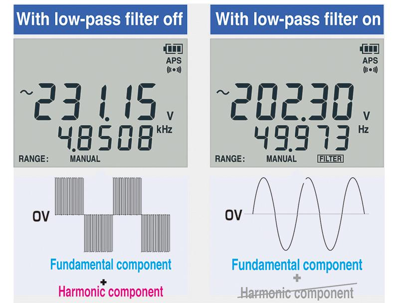

상세정보
스펙(제원표)
구매평
Q&A
제품 소개
HIOKI DT4252는 총 9개 모델로 구성된 DT4200 시리즈 중 하나로, 전압·전류·저항 등 현장에서 자주 쓰는 측정 항목을 폭넓게 지원하는 표준형 디지털 멀티미터입니다. DC전압 ±0.3%의 기본 정확도와 40Hz~1kHz의 넓은 AC 대역폭을 확보해 일반 전기설비 점검부터 인버터가 포함된 회로 점검까지 대응합니다.

저역통과필터를 켜면 고조파 성분이 제거되어 인버터 등에서 나오는 왜곡된 파형에서도 기본파 전압·주파수만 깨끗하게 읽을 수 있습니다.
주요 특징
- DC 전압 기본 정확도 ±0.3%, AC 전압 대역 40Hz~1kHz
- DC/AC 전류 6.000A/10.00A 직접 입력 측정 (별도 클램프 불필요)
- 전압과 주파수를 동시에 볼 수 있는 듀얼 디스플레이
- 저역통과필터로 고조파 영향 제거 — 인버터 기본파 성분만 정확히 측정
- PC 계측 대응 USB 통신 기능(DT4900-01 옵션)으로 실시간 그래프 기록 가능
- CAT IV 600V, CAT III 1000V 내전압 등급
본 정보 및 이미지는 제조사(HIOKI) 공식 자료를 바탕으로 재구성하여 제공합니다.